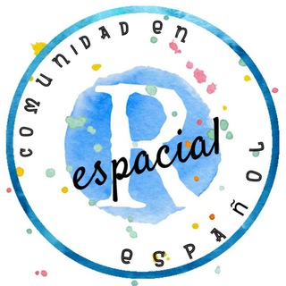

class: center, middle, inverse, title-slide # Aplicaciones de R espacial a políticas Sociales<br><br> <img src="img/Rlogo.png" style="width:16.0%" /> ### Richard Detomasi<br> <span style="font-size: 80%;"> <a href="mailto:richard.detomasi@gmail.com" class="email">richard.detomasi@gmail.com</a><br>Encuentro GURU::mvd<br>21 de agosto de 2019<br><br></span> ### <img src="img/by-nc-sa.png" style="width:10.0%" /> --- --- # Formación - deformación - Formado como Antropólogo y pichón de Demógrafo <br><br> -- - Devenido a pseudo-geógrafo y amante de la programación en R <br><br> -- - Afortunadamente puedo combinar mi cargo de Antropólogo en el Dpto. de Geografía del MIDES con mi gusto por R. <br><br> <!-- \hyperlink{label}{\beamerbutton{I jump to fourth slide of next frame}} --> --- # SIG o GDS? Diferencias principales entre el campo de los Sistemas de Información Geográficos (**SIG**) y el de la _Geographic Data Science_ (**GDS**): | Atributos | SIG | GDS | |----------------|---------------|----------------| | Disciplinas | Geografía | Geografía, Computación, Estadística | | Foco | Interfaz Gráfica | Código | | Reproducible | Mínimo | Máximo | <!-- Esta distinción es importante por ejemplo en el contexto de tener un impacto en las políticas: al ser abierto y transparente (y por lo tanto usar código en lugar de una interfaz gráfica de usuario no reproducible) la investigación maximiza sus posibilidades de alterar las decisiones. --> --- # Analisis de puntos <!-- \hypertarget<4>{label}{\beamerbutton{I'm on the fourth slide}} --> Los Modelos Espaciales Puntuales: - inicialmente implementados por botánicos y ecólogos, en la década de los 30 del siglo XX. <br><br> -- - En la actualidad este tipo de análisis es empleado en muchos campos tales como la arqueología, la epidemiologia, marketing o la criminología. <br><br> -- - Por ejemplo, es posible estudiar qué distribución espacial presentan los casos de una enfermedad determinada. <br><br> --- # Caso [**CAIF-ANEP**](http://dinem.mides.gub.uy/innovaportal/file/61671/1/estudio-de-localizacion-optima-para-cobertura-de-primera-infancia.-2015.pdf) <!-- { width=10% } { width=10% } --> <p align="center"> <img src="img/caif_anep.PNG" width="800"> </p> --- # Distancias - Hay varios tipos de distancias... <br><br> -- - <i class="fas fa-external-link-alt "></i> __euclidianas VS redes__ <i class="fas fa-route "></i> <br><br> -- - [EPP incorporó redes...](http://47jaiio.sadio.org.ar/sites/default/files/LatinR_10.pdf) <br><br> <p align="center"> <img src="img/epp2.PNG" width="400"> </p> --- # Caso [**"Yo Estudio y Trabajo"**](http://dinem.mides.gub.uy/innovaportal/file/104414/1/yet_dinem_ipgh.pdf)  --- # Para profundizar .left-column[ <i class="fab fa-meetup fa-3x " style="color:#de2d26;"></i> <br><br> <i class="fas fa-globe-americas fa-3x " style="color:#756bb1;"></i> <br><br> <i class="fab fa-telegram fa-3x " style="color:#2c7fb8;"></i> <br><br> <i class="fab fa-github fa-3x "></i> ] .rigth-column[ <br> Comunidad en Uruguay: [meetup R-Ladies](https://www.meetup.com/es-ES/rladies-montevideo/) y [meetup GURU](https://www.meetup.com/es-ES/GURU-mvd/) <br><br> <br><br> [Web R espacial ES](http://respaciales.ourproject.org/index.php?title=P%C3%A1gina_principal) <br><br> <br><br> Grupos de Telegram: [R espacial ES](https://t.me/rspatial_es) y [GURU](https://t.me/GURU) <br><br> <br><br> [Taller R espacial](https://gitlab.com/RichDeto/Talleres_R_GvSIG/tree/master/presentacion_R_espacial) ] --- <br><br> <br><br> <br><br> <br><br>